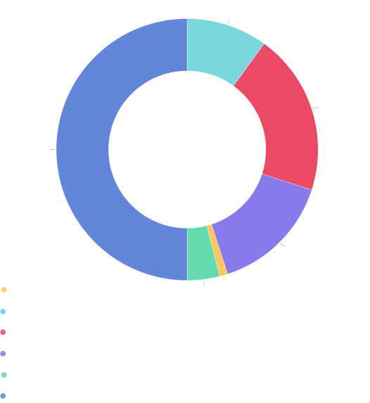

{{define "section-15"}}

<div id="token" class="container space-top-3">
  <div class="container-xl container-fluid space-md-2 px-0 px-md-12 px-lg-12">

 <div class="row justify-content-lg-between align-items-md-center"> 

    <div class="col-lg-6 mb-3 mb-lg-0 order-md-0 order-2">
      <div class="mb-3">
        <div class="content-6tN">
          <h3 class="karma-h">KarmaPi’s $KART token distribution is designed to secure the platform’s future success, with a total supply of 10 billion tokens allocated as follows:</h3>
          <br>
          <ul class="no-dot">
            <li><p class="karma-text-gray">1. Team (10%):</p></li>
            <li><p class="karma-text-gray">1 billion $KART to motivate the founding team and future employees for their dedication to the KarmaPi ecosystem.</p></li>
            <li><p class="karma-text-gray">2. Core Contributors (20%):</p></li>
            <li><p class="karma-text-gray">2 billion $KART to honor those building KarmaPi’s technology, ensuring ongoing innovation.</p></li>
            <li ><p class="karma-text-gray">3. Investors (15%):</p></li>
            <li><p class="karma-text-gray">1.5 billion $KART for early backers, providing essential capital for KarmaPi’s development.</p></li>
            <li ><p class="karma-text-gray">4. IDO (1%):</p></li>
            <li><p class="karma-text-gray">100 million $KART to enhance liquidity and accessibility, promoting a smooth market entry.</p></li>
            <li ><p class="karma-text-gray">5. Test Contributors (4%):</p></li>
            <li><p class="karma-text-gray">400 million $KART to reward community members participating in testing, improving KarmaPi’s platform.</p></li>
            <li ><p class="karma-text-gray">6. Communities and $KART Foundation (50%):</p></li>
            <li><p class="karma-text-gray">5 billion $KART to grow the community and ecosystem, fund initiatives, reward users, and support governance and sustainability through the foundation.</p></li>
          </ul>
          <p class="karma-text-gray mg-l-2">This strategic distribution ensures a balanced ecosystem that rewards all stakeholders and meets KarmaPi’s diverse needs.</p>
        </div>
      </div>
     
    </div>

    <div class="col-lg-6 mb-3 mb-lg-0 order-md-0 order-1">
      <div class="position-relative section-3-bg">
        <div class="space-top-2 display-mobile"></div>
        
        <!-- End SVG Elements -->
      </div>
    </div>
  </div>
</div> 
    </div>


      
{{end}}